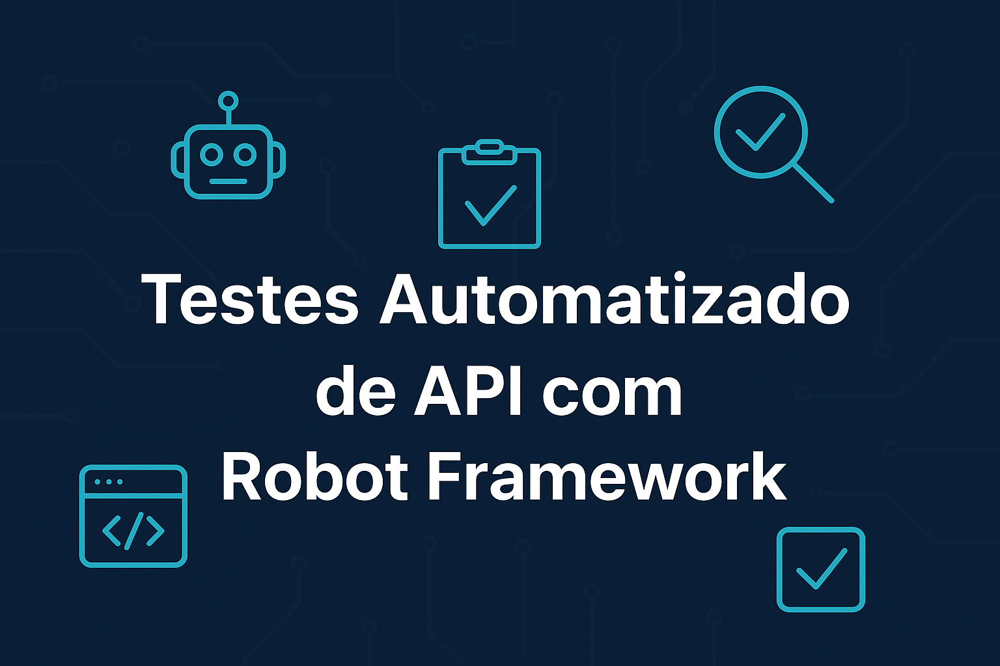
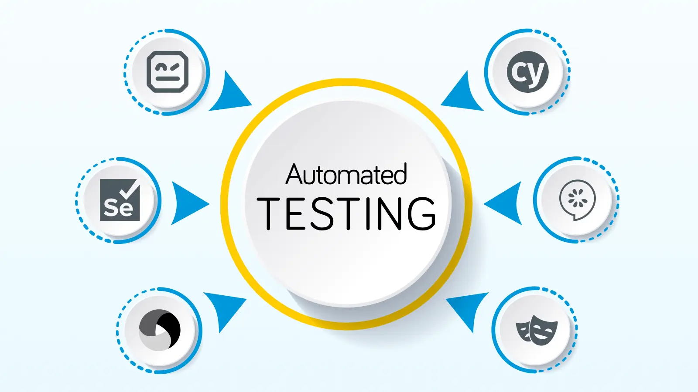

Projetos de Testes Automatizados

Testes de API com Robot Framework
Automação de testes REST com Robot Framework, validando endpoints, status codes e respostas JSON.
Ver Repositório

Testes de Frontend com Robot Framework + Selenium
Automação de interface de utilizador, validando fluxos críticos, formulários e componentes visuais com Selenium.
Ver Repositório
Electromo
E-commerce desenvolvido em HTML, CSS e JavaScript, com testes funcionais automatizados em Robot Framework.
Ver Projeto